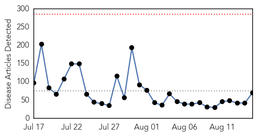
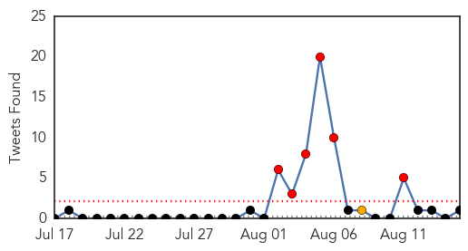
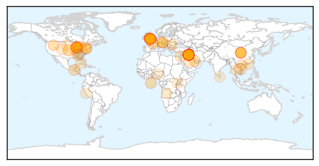
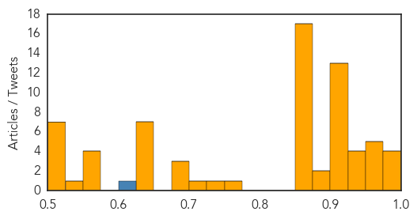

Toggle navigation
Early Warning
Daily Alerts
Unknown
Aug 15, 2014
Compare to:
-
Dengue Fever
Hemmorhagic Fever
Mold/Fungal Infection
Influenza
Meningitis
Pertussis / Whooping Cough
Middle East Respiratory Syndrome
Cholera
Hepatitis
Chikungunya
Yellow Fever
Bubonic Plague
West Nile Virus
Swine Flu
Ebola
Measles
Mumps
30 Day Trends
Web: 0
alerts
, 0
warnings
Twitter: 6
alerts
, 0
warnings
Top Articles:
Showing top 50 articles...
0.983
Salmonella outbreak investigated, after three people with links to disease die
0.982
Three die after contracting salmonella in same city as probe is launched into national outbreak that has hit more than 150 people
0.982
Almost 160 people infected by salmonella poisoning in national outbreak as experts believe cases 'could be linked'
0.982
Almost 160 people infected by salmonella poisoning in national outbreak as experts believe cases 'could be linked'
0.968
PHE investigating national outbreak of Salmonella
0.966
England health officials investigate salmonella outbreak, cases reported elsewhere in Europe
0.958
Salmonella outbreak in England under investigation
0.955
Three people who contracted Salmonella at Birmingham hospital have died
0.954
Three victims of salmonella outbreak die in hospital
0.949
Salmonella Outbreak: 99 Hampshire Cases
0.941
Health hub: A sustained drive against encephalitis
0.937
Salmonella outbreak investigated
0.937
Salmonella outbreak investigated
0.917
Chicago Tribune
0.917
Chicago Tribune
0.917
Chicago Tribune
0.917
Chicago Tribune
0.917
Chicago Tribune
0.917
Chicago Tribune
0.917
Chicago Tribune
0.917
Chicago Tribune
0.917
Chicago Tribune
0.917
Chicago Tribune
0.915
2 more TB cases identified in southern Sask. students
0.908
English health experts investigate Salmonella outbreak
0.903
English health experts investigate Salmonella outbreak
0.895
English health experts investigate Salmonella outbreak
0.889
Salmonella Investigation
0.866
Russia says no military personnel in Ukraine relief convoy- Pentagon
0.866
Russia denies Kiev attacked Russian army column, says no troops crossed border
0.866
Kremlin says Russian, Ukrainian chiefs of presidential staff met
0.866
U.N. urges "immediate de-escalation" of conflict in Ukraine
0.866
Ukraine foreign minister says to meet Russian, German, French counterparts Sunday
0.866
Russia says continuing talks with Ukraine on humanitarian aid
0.866
Russia says Ukraine forces seeking to disrupt its humanitarian mission
0.866
Germany's Steinmeier-EU welcomes some members' readiness to arm Iraq's Kurds
0.866
Britain summons Russian ambassador over reports of military incursion into Ukraine
0.866
Afghanistan seen running out of funds as poll deadlock drags on
0.866
Iraq's Sistani backs new PM, urges unity and end to corruption
0.866
Ukraine begins inspection of Russian aid convoy
0.866
Ukrainian border guards have crossed border to inspect Russian aid cargo
0.866
U.N. chief Ban commends Iraqi PM Maliki's decision to step aside
0.866
Two migrants rest during hunger strike demanding reform in U.S. immigration laws, in Mexico
0.866
Migrants attend hunger strike demanding a reform in U.S. immigration laws, in Mexico City
0.866
Bagi's dog Mokka searches for truffles in a forest near Jaszivany
0.752
Major salmonella outbreak hits UK
0.740
Vietnam detects first A/H5N6 virus in poultries
0.709
UK salmonella outbreak being investigated
0.698
400 people living with HIV in Ondo riverine community
0.685
Romanian man hospitalized with anthrax, others under surveillance
Top Tweets:
0.841
FluFactFriday: Flu A and B viruses routinely spread in people and cause seasonal flu epidemics each yr. http://t.co/wJ6iRHYn9u
0.550
Descubren mayor centro de acopio y procesamiento de marihuana en Amambay: Un verdadero complejo de nivel indus... http://t.co/IvyQAXc416
0.522
Fever, body aches, fatigue? It could be the flu. Flu season is coming - know the symptoms http://t.co/KwoAd1XYg4
Web/News Articles

Tweets

Article Locations

Article Confidences
